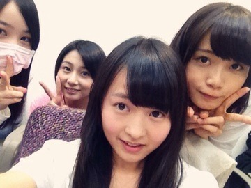
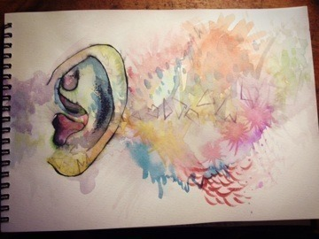

一昨日すごい雪でしたね...
ベランダに白い布団みたいな雪が
もっさりかぶっててびっくり。
そんな大雪の中、私は2年ぶりに
バレエのレッスン受けてきた！
先生に挨拶する予定だけだったけど
せっかくだしストレッチでもやろうか
となって、じゃあバーレッスンも...
じゃあセンターでも...と
結局全部やってきてしまった！
高1の乃木坂受かる前ぎりぎりまで
習ってたバレエですが、
からだが覚えてるみたい。
からだはかたくなったけど
やっぱり楽しかったー！

みなみかずみんお誕生日おめでとう！
本当にかわいいみなみー
私はみなみに甘々です。
いつも頭なでなでしてます。
次高2か...
あーどんどん大人になってくー泣
かずみはいつも私の服装見て
「まりかはブレないねー」
って言ってくれるの！
密かに嬉しいんだー^^
いつも平和でだいすき。
ナタリーさん特別企画
LIVEDVD副音声に参加しました！
第2部のおいでシャンプーブロックを
さゆりん、生駒と一緒に見て
ぺちゃくちゃおしゃべりしてます。
見てねーん
／
描いたり作ったりなんかしらしたら
載せてみるこーなー
＼

いつまで続けられるかな♪♪♪♪♪♪♪♪♪♪♪♪
♪♪♪♪♪♪♪♪♪♪
明日は幕張メッセで個握です！
1部2部3部だよー
なんか久しぶりな気がする。
楽しみだー
あ、服装どうしようー
まりか